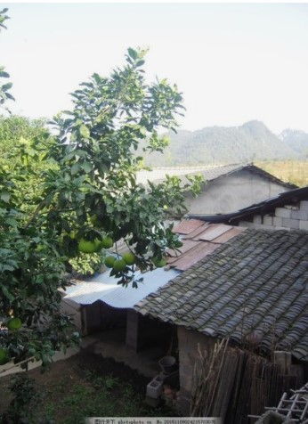

|
当好乡村振兴的"旗手"，发展乡村产业"壮体"，推进乡村建设"塑形，"加强乡村治理"铸魂" |
|
浪淘沙令·十八洞村 陆延云 明镜照蓝天，层叠梯田。苗家乡里话奇观。老树枯藤溶洞挂，洞洞旁穿。 良策有千般，一解连环。将贫强逼出深山。金凤扶摇霄汉上，横翅翩翩。  乡村振兴战略时明确提出，要按照“产业兴旺、生态宜居、乡风文明、 治理有效、生活富裕”的总要求，建立健全城乡融合发展体制 机制和政策体系，加快推进农业农村现代化。 党的十九大报告提出,实施“乡村振兴战略”,并描绘了“产业兴旺、 生态宜居、乡风文明、治理有效、生活富裕”的美好蓝图,这既是今后 一段时期统领农村发展的总纲领,更是新一轮乡村发展的重大机遇。 近年来,我国牢固树立“绿水青山就是金山银山”的发展理念,坚持以 党建引领发展,以“我的村庄我的梦”为载体,努力让农村更美丽、 更文明，让群众更富足、更幸福。 但在推进过程中,仍存在着不平衡不充分问题，如产业发展缺乏 持续能力、生态环境治理任务繁重、村民文明程度不高、 农村基层治理有待加强、农村空心化现象严重、城乡居民收入差距拉大等问题。 |
|